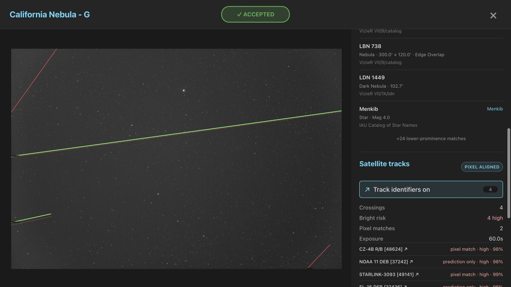
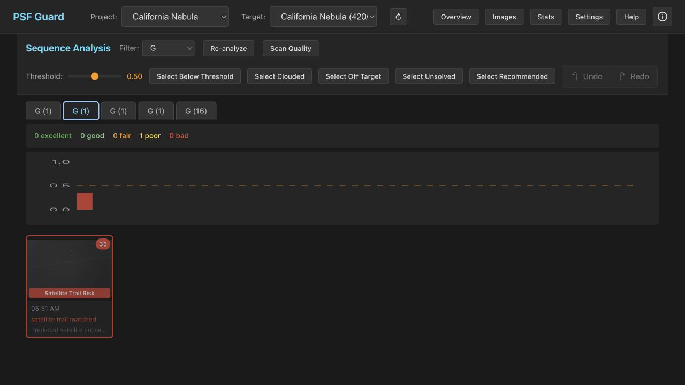

Satellite Tracks
PSF Guard uses Seiza to solve an exposure, projects cached orbital elements through its exact observing interval and site, then tests the nearby FITS pixels for a matching trail. The overlay keeps prediction and pixel evidence separate; the sequence grader rejects only when both support a potentially bright crossing.


Identify a crossing
- Open an image and find Satellite tracks.
- Choose Identify satellite tracks, or press T. PSF Guard solves the pixels first when no valid WCS is cached.
- Toggle Track identifiers to compare the paths. Red, yellow, and cyan dashed lines are high, possible, and low-risk orbital predictions. A solid green line marks the fitted pixel path.
- Select a named result to open its external satellite information page for orbital and launch details.
Timing and observing site
Topocentric propagation requires latitude, longitude, elevation, and the
UTC shutter interval. PSF Guard accepts explicit DATE-BEG /
DATE-END bounds, or derives bounds from exposure duration and
DATE-AVG. If no midpoint exists, it uses
DATE-OBS plus EXPTIME or EXPOSURE.
Site aliases include SITELAT/SITELONG,
LAT-OBS/LONG-OBS, and
OBSGEO-B/OBSGEO-L. Missing time, site, WCS, or
orbital elements makes the analysis abstain instead of calling the frame
clean.
Real exposure validation
These screenshots use a real 60-second G-filter California Nebula exposure from October 2025. Seiza 0.9 matched 101 stars at 1.90 arcsec RMS. A historical TLE snapshot from the IAU SatChecker archive predicted four high-risk crossings:
- CZ-4B R/B [48624]: matched at 57.8 sigma and 100% path continuity, about 30 sensor pixels from the raw prediction;
- STARLINK-3093 [49141]: matched at 4.2 sigma and 100% continuity, about 76 pixels from the raw prediction;
- two additional high-risk predictions did not match a pixel trail and remain prediction-only warnings.
A fainter exposure from the preceding night independently matched STARLINK-5450 [54778] at 5.8 sigma and 99.7% continuity, roughly 43 pixels from the orbital path. Both dry-run regrade checks reject the affected frame for a pixel-aligned bright trail. Named candidates link to their external satellite information pages for follow-up.
How pixel alignment works
The shared Seiza matcher downsamples the frame once to at most 2,048 pixels on its long axis, estimates local noise, and performs a coarse-to-fine matched-filter search only in a narrow corridor around the full clipped prediction polyline. A match requires at least 2.0 sigma robust line contrast, 65% path continuity, and 50% usable sample coverage. Tracks without enough sideband evidence are reported as not evaluated rather than clean non-detections.
It records the fitted polyline segments, offsets, angle delta, physical-ADU contrast, significance, continuity, coverage, and search radius without modifying the original orbital path. The working image is shared across candidates, so work scales with the predicted crossings rather than every possible line in the full frame.
Risk and grading
The risk is a conservative 0–1 geometry and illumination heuristic using
sunlight fraction, range, elevation, and clipped path length. It is not an
apparent magnitude. Possible and high orbital predictions cap the quality
score at 0.75 for review. Prediction alone never proposes rejection. A
high-risk candidate must also have a pixel-aligned trail before the score is
capped at 0.35 and an [Auto] Pixel-aligned bright satellite trail
rejection is proposed. Every rejection still requires per-image review and
explicit confirmation.
Offline and reproducible use
The explicit on-demand action may refresh CelesTrak data. Timestamped
snapshots are retained for historical re-tracing up to a 5 GiB default
bound. Background quality scans and
screen-fits --regrade-db are cache-only, never download orbital
data, and select the retained snapshot closest to each exposure. For a
fixed historical or reproducible input, configure a local OMM JSON or TLE
file:
"astrometry": {
"data_dir": "/var/lib/psf-guard/seiza",
"satellite_elements": "historical.tle"
}Per-image results retain the FITS fingerprint, exact WCS, timing and site headers, orbital source and payload SHA-256, alignment version, and Seiza dependency versions. Replacing the image, solution, or alignment software invalidates the cached result.